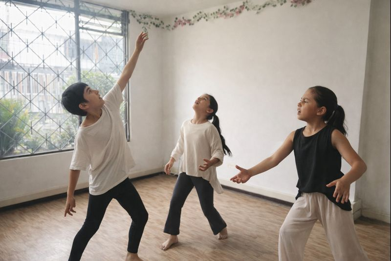
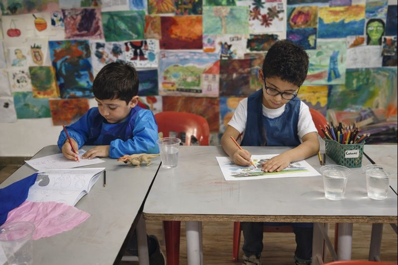

Talleres Vacacionales Musicala 2025 – Vacaciones artísticas con propósito 🎭🎨🎶
Una experiencia integral donde cada niño explora música, danza + teatro y artes plásticas en un ambiente
creativo, cuidado y pedagógico. Ideal para descubrir talentos, fortalecer confianza y hacer amigos.
Semanas independientes: pueden asistir una o varias semanas sin quedar “colgados”.
3 lenguajes artísticos cada día: música + corporal + artes (más actividades lúdicas).
Enfoque pedagógico real: aprendizaje creativo, no solo “pasar el rato”.
Explora el brochure
Haz clic en una opción para ver solo esa parte de la información.
Una semana que sí deja huella (y no solo cansancio 😅)
En Musicala diseñamos los Talleres Vacacionales como una experiencia artística completa:
cada día integra música, danza/teatro y artes plásticas, con actividades lúdicas y sociales.
El objetivo no es “entretenimiento”: es aprendizaje creativo con acompañamiento humano, sensible y profesional.
Lo mejor: cada semana funciona como un ciclo completo (inicio, desarrollo y cierre).
Así, si tu hijo/a viene una semana, dos o varias, siempre vive una experiencia redonda.
¿Para quién es?
● Niños y niñas que aman crear, moverse, cantar, dibujar o explorar.
● Familias que buscan un espacio cuidado, con estructura pedagógica y ambiente bonito.
● Personas que quieren que sus vacaciones tengan sentido: arte, convivencia y confianza.
¿Qué se llevan?
● Más seguridad para expresarse (cuerpo, voz, ideas).
● Habilidades reales: ritmo, coordinación, escucha, creatividad visual y escénica.
● Proyectos visibles por semana (muestra / mini-galería / ensamble, según grupo).
Inscripciones: Escríbenos por WhatsApp y te contamos cupos, edades y opciones de semanas.
Sabemos que las familias viajan o combinan actividades, entonces manejamos una lógica simple:
cada semana es independiente. Puedes escoger las semanas que mejor te funcionen.
Si hay festivos, ajustamos el orden de los días sin perder contenidos.
🎭💃🎶 ¿Qué vive tu hijo/a cada semana?
Cada semana combinamos cuatro áreas que se conectan en mini-proyectos. No es “clase suelta”: es un proceso corto con sentido.
Danza/Expresión: secuencias corporales, musicalidad, presencia escénica.
Música: canto, percusión, teclados/xilófono, ukelele y ensamble.
Artes plásticas: dibujo, color, collage/modelado y creación de piezas visuales.
El resultado varía según edades y grupo, pero siempre buscamos que haya proceso + producto:
algo que se pueda mostrar y valorar (sin obligar a nadie a presentarse si no quiere).
Exploración Corporal (Danza + Teatro)

Integramos movimiento, expresión, ritmo, imaginación y juego dramático, adaptado a la edad.
Trabajamos tres componentes: técnico, teórico (vivencial) y obras.
1. Componente Técnico (Danza + Teatro)
Desarrollamos habilidades físicas y expresivas fundamentales.
Danza – Técnica Corporal
● Calentamientos guiados: movilidad articular y estiramientos seguros.
● Patrones de movimiento: marchas, desplazamientos, diagonales básicas.
● Apreciación musical: escuchar, imaginar, nombrar emociones y capas sonoras.
3. Componente de Obras
Repertorio progresivo (3, 4 y 5 notas) adaptado al instrumento del día.
En palabras sencillas: aprenden música jugando, sí, pero con bases reales:
coordinación, ritmo, melodía, lectura simple y ensamble.
Exploración Artística (Artes Plásticas)

En Artes Plásticas exploramos materiales, técnicas y procesos creativos de forma progresiva.
Cada semana se construye una creación final (mini-galería, personajes, escenografías, objetos artísticos, etc.).
1. Componente Técnico
Dibujo
● Trazos básicos, control de presión y formas.
● Proporciones iniciales y composición simple.
Pintura / acuarelas
● Técnicas básicas de pincel, mezcla de colores y degradados.
● Control del agua: húmedo sobre seco / húmedo sobre húmedo.
Modelado (plastilina o arcilla)
● Rollos, esferas, planchas, volumen y uniones seguras.
Collage y reciclaje creativo
● Recorte seguro, texturas y ensamblaje para construir personajes u objetos.
2. Componente Teórico (sencillo y contextual)
● Teoría del color: primarios, secundarios, armonías y contrastes.
● Elementos del arte: línea, forma, color, textura, espacio.
● Apreciación: observar, reinterpretar y hablar sobre lo que se crea.
3. Componente de Obras
Ejemplos de proyectos semanales:
● Mini-galería de dibujos, pinturas y collage.
● Creación de personajes (dibujados o modelados).
● Elementos visuales para apoyar teatro/danza (máscaras, accesorios, escenografía).
● Esculturas pequeñas o composiciones en técnicas mixtas.
En palabras sencillas: exploramos dibujo, pintura, collage, modelado y creación.
Se aprende haciendo y se valora el proceso, no solo “el resultado bonito”.
Talleres Lúdicos y Actividades Grupales
Las vacaciones también son convivencia. Por eso incluimos espacios lúdicos que fortalecen habilidades sociales sin perder el enfoque formativo.
● Juegos cooperativos y retos creativos.
● Dinámicas teatrales y musicales de equipo.
● Pausas activas, bienestar y socialización guiada.
Proyectos Semanales Temáticos
Cada semana desarrollamos un mini-proyecto que une todas las áreas:
● Una historia inventada.
● Una escena o micro-obra.
● Una coreografía o secuencia corporal.
● Una pieza musical (canción/ensamble).
● Una creación visual (mini-galería / obra artística).
Las temáticas cambian cada año, y suelen estar conectadas con naturaleza, convivencia, bienestar y creatividad.
¿Qué pueden esperar las familias?
Un espacio seguro y amoroso
Acompañamos con cuidado emocional, escucha y límites claros. Queremos arte con bienestar, no caos.
Aprendizaje real (sin rigidez)
Tenemos estructura pedagógica clara, pero la adaptamos a cada grupo y a los intereses que van apareciendo.
Un ambiente creativo y estético
Materiales, instrumentos, dinámicas y un lugar pensado para crear en serio.
Procesos y resultados visibles
Cada semana se ve un resultado: muestra, creación, galería o ensamble. La participación nunca es obligatoria si algún niño no desea presentarse.
Flexibilidad por semanas
Si solo pueden una semana, perfecto. Si pueden varias, mejor. Nadie “pierde el hilo”.
Los Talleres Vacacionales Musicala combinan música, danza/teatro y artes plásticas
dentro de una estructura diaria clara, con proyectos semanales y ambiente de cuidado.
● 4 horas por día (sin horas exactas, según operación).
● Semanas independientes (pueden elegir una o varias).
● Proceso creativo con resultados visibles.
● Enfoque pedagógico, no solo recreativo.
Si quieres asegurar cupo, escríbenos por WhatsApp y te guiamos en el proceso de inscripción.
CRONOGRAMA Y CONTENIDOS – Talleres Vacacionales Musicala 2025
(4 horas por día — sin horas exactas — si hay festivos, ajustamos sin alterar los contenidos.)
Distribución diaria:
● Artes Plásticas – 1 hora.
● Exploración Corporal (Danza + Teatro) – 1 hora.
● Exploración Musical – 1 hora.
● Onces – 30 minutos.
● Talleres Lúdicos – 30 minutos.
Semana 1 – Exploración Creativa
Enfoque: adaptación al grupo, descubrimiento de materiales y juegos de ritmo, color y movimiento.
Estructura de los días (Día 1 a Día 5)
Para que cada familia pueda adaptarse a su propio calendario, nombramos los días como
Día 1, Día 2, Día 3, Día 4 y Día 5.
Lo que cambia es el enfoque musical del día.
Día 1 – Canto
Enfoque musical: respiración, proyección y gimnasia vocal.
Hora 1: Artes Plásticas.
Hora 2: Exploración Corporal.
Hora 3: Música – Canto.
30 min: Onces.
30 min: Talleres Lúdicos.
Día 2 – Percusión y Orff
Enfoque musical: patrones rítmicos y acompañamientos simples.
Hora 1: Artes Plásticas.
Hora 2: Exploración Corporal.
Hora 3: Música – Percusión/Orff.
30 min: Onces.
30 min: Talleres Lúdicos.
Día 3 – Xilófono y Piano
Enfoque musical: melodías de 3 notas y coordinación.
Hora 1: Artes Plásticas.
Hora 2: Exploración Corporal.
Hora 3: Música – Teclados/Xilófono.
30 min: Onces.
30 min: Talleres Lúdicos.
Día 4 – Ukelele
Enfoque musical: acordes básicos y rasgueos iniciales.
Hora 1: Artes Plásticas.
Hora 2: Exploración Corporal.
Hora 3: Música – Ukelele.
30 min: Onces.
30 min: Talleres Lúdicos.
Día 5 – Ensamble
Enfoque musical: integración y escucha grupal.
Hora 1: Artes Plásticas.
Hora 2: Exploración Corporal.
Hora 3: Música – Ensamble.
30 min: Onces.
30 min: Talleres Lúdicos.
● Técnico: trazos básicos, control de presión, mezclas simples de color, recorte seguro.
● Teórico: elementos del arte (línea, forma, color), paletas frías y cálidas.
● Obras: mini-galería inicial o creación de personajes sencillos.
Quienes lo deseen pueden unirse al Musicala Fest, donde se comparte una de las creaciones realizadas durante los vacacionales.
La participación es voluntaria y se adapta al tiempo de cada familia.